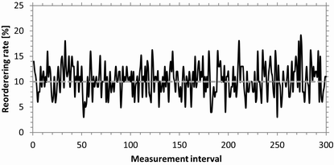
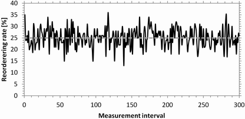
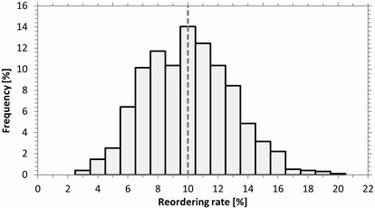
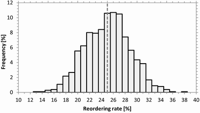

Reordering Rate
Reordering of packets requires buffering of packets. So a configured delay is a prerequisite for packet reordering. For the examples in this section, a delay of 50 ms without jitter is configured. UDP is used with an average packet rate of one packet per ms.
Each reordering rate result value is derived from a measurement interval of 100 packets. The following figures show the measured reordering rates for the first 300 measurement intervals (30000 packets). The configured reordering rates are 10 % and 25 %, as indicated by the gray dashed lines.

Reordering rate vs. measurement interval (10 % reordering configured)

Reordering rate vs. measurement interval (25 % reordering configured)
The following figures show the distribution of the reordering rates over all measured intervals.

Reordering rate distribution (10 % reordering configured)

Reordering rate distribution (25 % reordering configured)